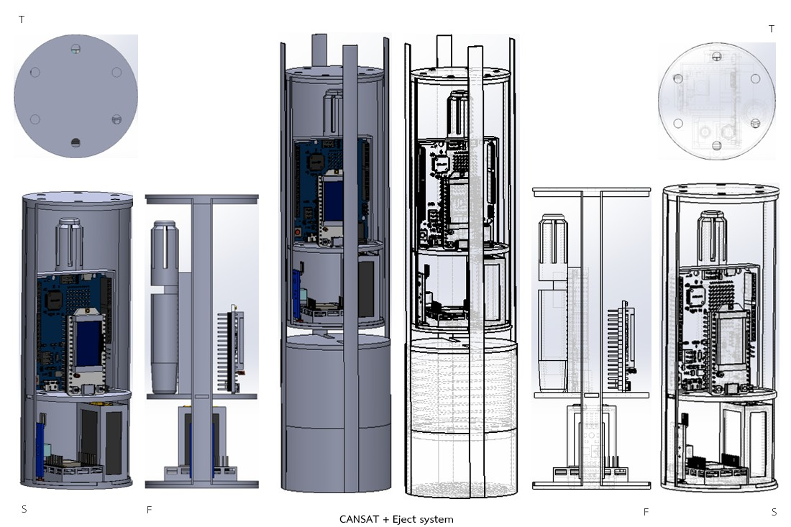
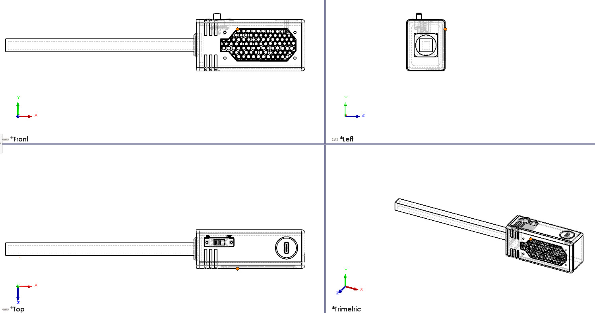
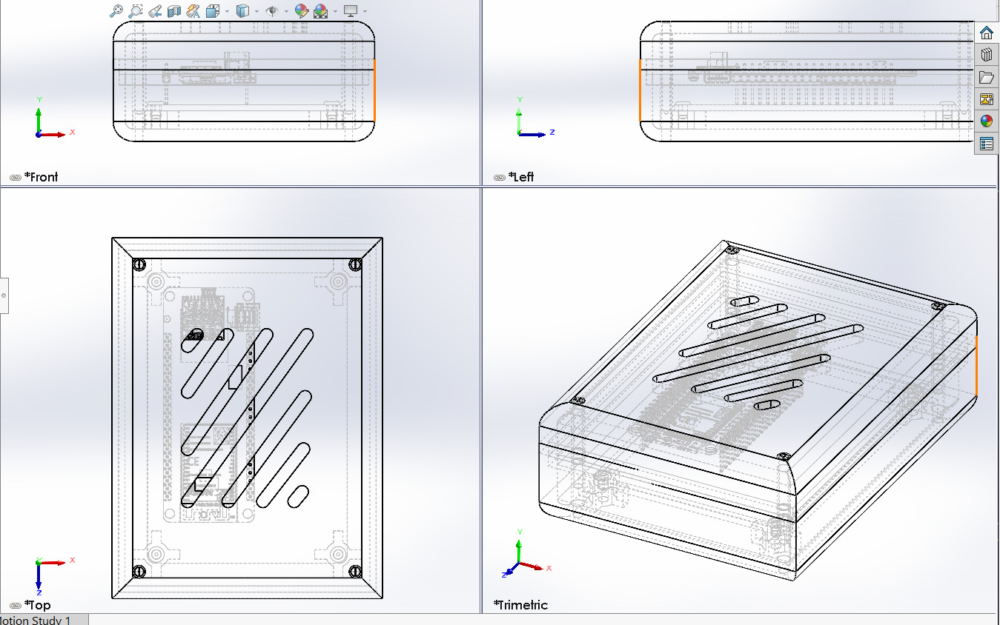
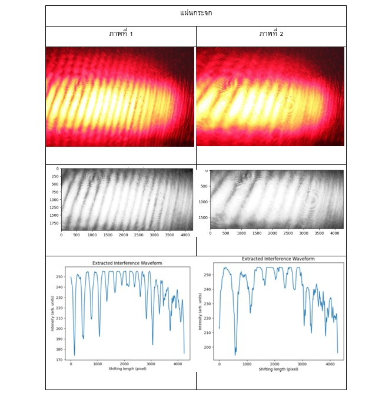
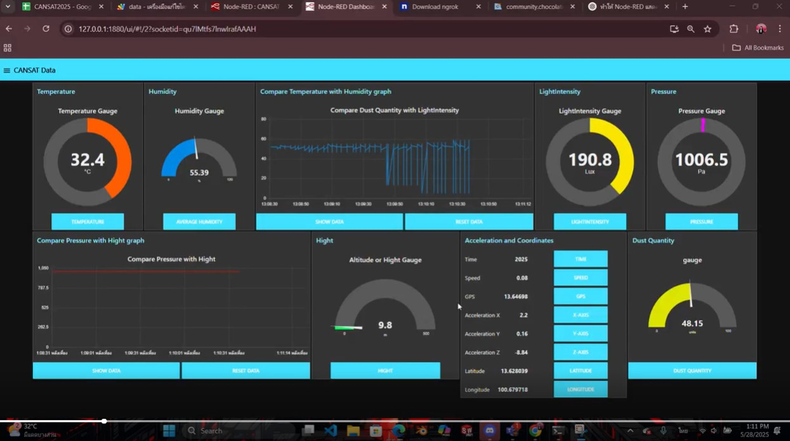
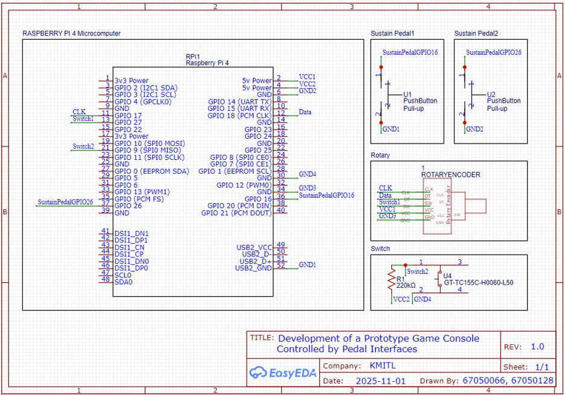

สวัสดีครับอาจารย์ เว็บไซต์นี้ทำออกมาแบบไวๆเพื่อส่งงาน แต่สามารถกดเข้าไปดู cv web ที่คิวเคยทำไว้แบบรีบๆได้นะครับ คิวทำไว้สัมภาษณ์ทุนไม่นานมานี้ (เมื่อวาน แฮ่) เลยออกมาแบบเรียบๆแต่ข้อมูลครบกว่าอิอิ

Designed a cansat and ejection system for data acquisition missions that must be able to fit custom-designed electronic circuits, be lightweight, and not interfere with LoRa signals for long-range airborne data transmission.

It is designed to allow the insertion of a custom PCB and to measure triaxial magnetic fields without signal interference.

It is designed for TTgo board with custom PCB, it must have ventilation holes for PCB that has heat dissipation and must be light weight, not interfere with data signal.

Process images from the interferometer to study interference patterns and color differences, and extract graph trends for analysis.

The data is retrieved from the database before being displayed in this program, and you can choose the type of graph for the display.

It is a microprocessor that can perform processing similar to a small computer. It can be used with Python and Assembly languages.